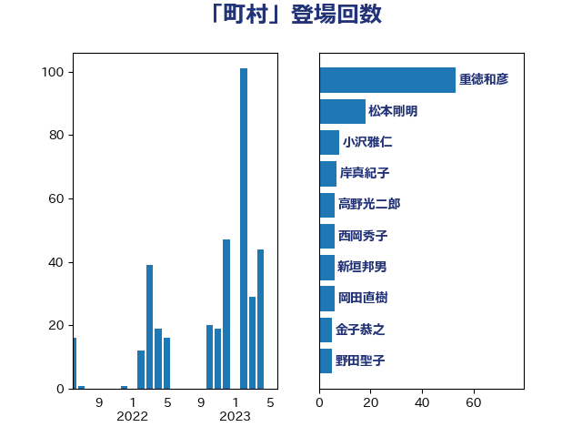

単語「町村」

| 重徳和彦 | 立憲民主党 | 53 回 |
| 松本剛明 | 自由民主党 | 18 回 |
| 小沢雅仁 | 立憲民主党 | 8 回 |
| 岸真紀子 | 立憲民主党 | 7 回 |
| 高野光二郎 | 自由民主党 | 6 回 |
| 西岡秀子 | 国民民主党 | 6 回 |
| 新垣邦男 | 立憲民主党 | 6 回 |
| 岡田直樹 | 自由民主党 | 6 回 |
| 金子恭之 | 自由民主党 | 5 回 |
| 野田聖子 | 自由民主党 | 5 回 |
| 西銘恒三郎 | 自由民主党 | 5 回 |
| 冨樫博之 | 自由民主党 | 5 回 |
| 伊波洋一 | 無所属 | 5 回 |
| 高橋千鶴子 | 日本共産党 | 4 回 |
| 伊藤岳 | 日本共産党 | 4 回 |
| 林芳正 | 自由民主党 | 3 回 |
| 山本博司 | 公明党 | 3 回 |
| 山本剛正 | 日本維新の会 | 3 回 |
| 堀内詔子 | 自由民主党 | 3 回 |
| 北神圭朗 | 無所属 | 3 回 |
| あかま二郎 | 自由民主党 | 3 回 |
| 長谷川英晴 | 自由民主党 | 2 回 |
| 金子恵美 | 立憲民主党 | 2 回 |
| 赤嶺政賢 | 日本共産党 | 2 回 |
| 落合貴之 | 立憲民主党 | 2 回 |
| 舞立昇治 | 自由民主党 | 2 回 |
| 竹内真二 | 公明党 | 2 回 |
| 稲富修二 | 立憲民主党 | 2 回 |
| 石井正弘 | 自由民主党 | 2 回 |
| 湯原俊二 | 立憲民主党 | 2 回 |
| 松野博一 | 自由民主党 | 2 回 |
| 有村治子 | 自由民主党 | 2 回 |
| 平林晃 | 公明党 | 2 回 |
| 岩田和親 | 自由民主党 | 2 回 |
| 寺田稔 | 自由民主党 | 2 回 |
| 塩川鉄也 | 日本共産党 | 2 回 |
| 倉林明子 | 日本共産党 | 2 回 |
| 伊東信久 | 日本維新の会 | 2 回 |
| 中川宏昌 | 公明党 | 2 回 |
| 鬼木誠 | 立憲民主党 | 1 回 |
| 高良鉄美 | 無所属 | 1 回 |
| 野田国義 | 立憲民主党 | 1 回 |
| 道下大樹 | 立憲民主党 | 1 回 |
| 藤井比早之 | 自由民主党 | 1 回 |
| 萩生田光一 | 自由民主党 | 1 回 |
| 荒井優 | 立憲民主党 | 1 回 |
| 芳賀道也 | 国民民主党 | 1 回 |
| 自見はなこ | 自由民主党 | 1 回 |
| 紙智子 | 日本共産党 | 1 回 |
| 竹詰仁 | 国民民主党 | 1 回 |
| 窪田哲也 | 公明党 | 1 回 |
| 神津たけし | 立憲民主党 | 1 回 |
| 石川香織 | 立憲民主党 | 1 回 |
| 石井苗子 | 日本維新の会 | 1 回 |
| 田村智子 | 日本共産党 | 1 回 |
| 田名部匡代 | 立憲民主党 | 1 回 |
| 渡辺孝一 | 自由民主党 | 1 回 |
| 清水貴之 | 日本維新の会 | 1 回 |
| 浜田聡 | NHK党 | 1 回 |
| 河野太郎 | 自由民主党 | 1 回 |
| 池下卓 | 日本維新の会 | 1 回 |
| 江藤拓 | 自由民主党 | 1 回 |
| 永岡桂子 | 自由民主党 | 1 回 |
| 横山信一 | 公明党 | 1 回 |
| 梅村みずほ | 日本維新の会 | 1 回 |
| 星北斗 | 自由民主党 | 1 回 |
| 早稲田ゆき | 立憲民主党 | 1 回 |
| 後藤茂之 | 自由民主党 | 1 回 |
| 庄子賢一 | 公明党 | 1 回 |
| 岸田文雄 | 自由民主党 | 1 回 |
| 岩渕友 | 日本共産党 | 1 回 |
| 岩本剛人 | 自由民主党 | 1 回 |
| 岡田克也 | 立憲民主党 | 1 回 |
| 小林茂樹 | 自由民主党 | 1 回 |
| 宮路拓馬 | 自由民主党 | 1 回 |
| 宮崎政久 | 自由民主党 | 1 回 |
| 塩田博昭 | 公明党 | 1 回 |
| 坂井学 | 自由民主党 | 1 回 |
| 和田義明 | 自由民主党 | 1 回 |
| 吉良よし子 | 日本共産党 | 1 回 |
| 吉田久美子 | 公明党 | 1 回 |
| 古川直季 | 自由民主党 | 1 回 |
| 中川康洋 | 公明党 | 1 回 |
| 三浦靖 | 自由民主党 | 1 回 |
| おおつき紅葉 | 立憲民主党 | 1 回 |